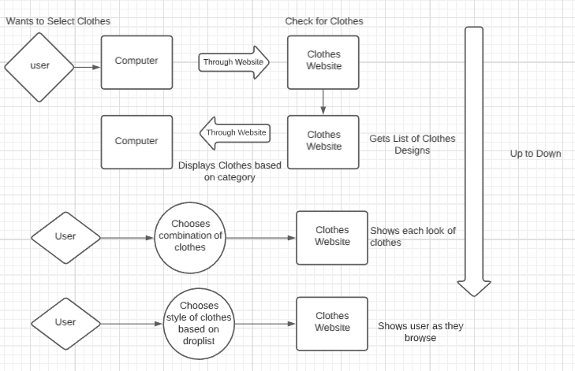
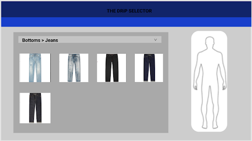
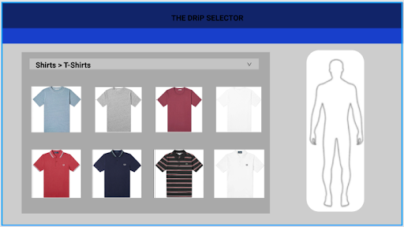
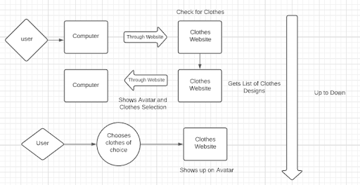
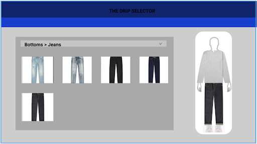
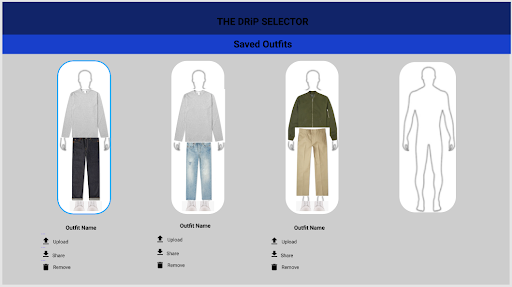
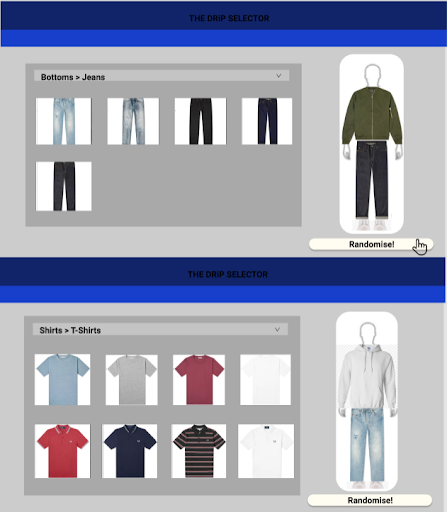

design and architecture
Minimum Viable Features
Selecting Clothes
Users can choose clothes from a dropdown list for each different category.
User Stories
- As a user I want to be able to select and browse through different categories of clothes, whether that be t-shirts, jackets, jeans, pants etc.
- This will allow me to start building outfits by choosing different pieces of clothing that are available.
- As a user wanting to experiment or expand their style and wardrobe, I want to be able to browse through different styles, colours or genres of clothing that I have not previously considered.
Textual Explanation
This feature allows the user to select any clothes that they may seem interested in. The clothes will be in the site already that have been selected by our team with the price and store page that is accessible from the clothes. Our website will include a dropdown list that will allow the user to select from different categories easily. Users will be able to browse different genres, styles and colours of clothing to have more choices and for inspiration
Validation Test
Selecting a category should create a dropdown list where you are able to choose and see what clothing styles are available.
  - Users can browse through different categories of clothes and styles.
- Styles of clothing will be sorted according to categories e.g. Bottoms Jeans
Clothes on an Avatar
The clothes will appear on an avatar (that can be adjusted).
User Stories
- As a user that is unable to physically shop and browse through clothing in-store due to Victoria COVID-19 restrictions, I want to be able to receive a visual representation of how outfits look as well as different pieces of clothing look, should I decide to buy a piece of similar clothing online.
- This will allow me to ensure that all the selected styles of clothing that I am looking at will suit in my current wardrobe and style.
- As a user, I want a visual representation of how different colours or styles of clothing will look together with clothes that I already own.
- This will allow me to receive a representation of the different colour blocking of outfits depicted on the avatar.
Textual Explanation
This feature shows the specific clothes chosen by the user to be displayed onto the avatar that most accurately represents the user. The user will be able to choose any clothes that attract them to display onto the avatar to have an accurate presentation on how the clothes will look together. The user can also put in their own clothes to create a visual representation on their clothes with the clothes they may possibly purchase. This gives the user the option to see an example of how the clothes they might buy would look together or with already owned clothing.
Validation Test
Selecting the clothes should cause it to appear on the given avatar.
 - Users select any piece of clothing from the menu on the left.
- The selected piece of clothing will be displayed on the avatar on the right along with any other pieces of clothing.
Saved Outfits
Clothes on the avatar can be saved together as outfits and viewed again at a later date.
User Stories
- As a user, I have browsed through and selected an outfit that I'm happy with. I want to save this outfit to view at a later date should i decide to order the pieces online.
- As a user, I want to show and share the outfit that I have created with my friends and family at a later date.
- As a user, I want to see what colour t-shirt best fits with my pair of jeans at home. I want to save all the outfit combinations i have created with a pair of jeans and various coloured t-shirts so that in the future i can review them and select the best fitted t-shirt.
- As my style and wardrobe changes, I want to be able to save my outfits to review in the future on how my style has progressed.
Textual Explanation
This feature allows the user to save their outfits temporarily while on the website. This lets the user be able to create multiple outfits in one sitting to compare and share their outfit creations. This feature lets the user create their outfits to use at a later date. This allows users to make outfits for later to use with any originally owned pieces of clothing to create the outfit when you need to go out. This gives a good reference when users need to create an outfit when you need to go out.
Validation Test
By clicking on a 'save outfit' button, it should save the current composition of clothing and be accessible at any time.
- Users can view all their saved outfits.
- Users have the option to share, download or delete their outfits.
Random Outfit Generator
Outfits can be randomly generated on the avatar.
User Stories
- As a user wanting a new outfit, I want the website to recommend to me a random outfit so that I will have new ideas and inspiration.
- As a user who is restricted from going shopping in physical stores and retailers due to COVID-19 restrictions, I want to be able to spend my free time playing around with different outfits to try and replace the typical shopping experience.
Textual Explanation
This feature lets the user randomly generate an outfit for their specific gender. The outfits generated are random to give the user inspiration or ideas to make their own personal outfit. With this random generated outfit feature it gives a new look on different ideas that may have happened in real life stores when browsing clothes. This can give the real life feeling of clothes shopping while being at home due to the COVID-19 lockdown.
Validation Test
Clicking a button should randomize the clothing on the avatar.
Purchasing Clothes from partnered clothing stores
Clients will be directed to a store where they are able to purchase the selected clothes on their avatar.
User Stories
- As a user, I have browsed through and selected an outfit that I'm happy with. I want to add this outfit and the pieces it contains to my wardrobe and wish to be directed to a website or store where I can purchase this item.
- As a user, I am considering purchasing a piece of clothing and wish to see the price beforehand, this will allow me to view the price of the clothing.
- As a user, I have been looking for this particular item, I wish to be directed to a website that sells a similar piece of clothing.
Textual Explanation
This feature makes all clothes be directed to a clothing store that the user can purchase the item from. All clothes will have their price on them that is given from the clothing store chosen. The user can click on the outfit or piece of clothing to be directly sent to the clothing store to purchase the item. All clothes will have a link to the partnered stores to direct them to a place to purchase. This helps the user be directly connected to a place to purchase making the user not have to search it to find it.
Validation Test
Clicking the links to ensure they redirect the user to the vendors pages and function as expected.